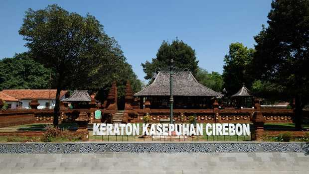

Sejarah Kota Cirebon
Menurut Sulendraningrat yang mendasarkan pada naskah Babad Tanah
Sunda dan Atja pada naskah Carita Purwaka Caruban Nagari, Cirebon
mulanya adalah sebuah dukuh kecil yang awalnya didirkan oleh Ki
Gedeng Tapa, yang lama-kelamaan berkembang menjadi sebuah
perkampungan ramai dan diberi nama Caruban (Bahasa Sunda: campuran).
Dinamakan Caruban karena di sana ada percampuran para pendatang dari
berbagai macam suku bangsa, agama, bahasa, adat istiadat, latar
belakang dan mata pencaharian yang berbeda. Mereka datang dengan
tujuan ingin menetap atau hanya berdagang. Karena awalnya hampir
sebagian besar pekerjaan masyarakat adalah sebagai nelayan, maka
berkembanglah pekerjaan lainnya, seperti menangkap ikan dan rebon
(udang kecil) di sepanjang pantai yang bisa digunakan untuk
pembuatan terasi. Lalu ada juga pembuatan petis dan garam. Air bekas
pembuatan terasi inilah akhirnya tercipta nama “Cirebon” yang
berasal dari Cai(air) dan Rebon (udang rebon) yang berkembang
menjadi Cirebon yang kita kenal sekarang ini.
Geografis Kota Cirebon
Kota Cirebon terletak di bagian timur Provinsi Jawa Barat dan berada
pada jalur utama lintas pantura. Secara geografis Kota Cirebon
berada pada posisi 6,41º Lintang Selatan dan 108,33º Bujur Timur
pada Pantai Utara Pulau Jawa Bagian Barat. Bentuk wilayah Kota
Cirebon memanjang dari Barat ke Timur sekitar 8 kilometer dan dari
Utara ke Selatan sekitar 11 kilometer dengan ketinggian dari
permukaan laut ±5 meter. Batas-batas wilayah Kota Cirebon adalah
sebelah utara dengan Sungai Kedung Pane, sebelah barat dengan Sungai
Banjir Kanal/Kabupaten Cirebon, sebelah selatan dengan Sungai
Kalijaga, dan sebelah timur dengan Laut Jawa.
Wilayah Kota Cirebon merupakan dataran rendah dengan ketinggian
bervariasi antara 0-200 meter di atas permukaan laut. Peningkatan
ketinggian mulai dari daerah pantai menuju ke arah Selatan dengan
ketinggian maksimal 200 meter, yaitu di Kelurahan Argasunya,
Kecamatan Harjamukti.
Tempat Wisata di Kota Cirebon
Cirebon yang merupakan pintu gerbang Provinsi Jawa Barat dari
wilayah timur Jawa ini kini semakin ramai didatangi wisatawan.
Mampir ke sejumlah tempat wisata di Cirebon bisa menjadi alternatif
karena pilihan destinasi yang begitu beragam. Berikut beberapa
tempat wisata di Cirebon yang mungkin cocok untuk Anda kunjungi.
Alun-alun Kejaksan

Kawasan Alun-alun Kejaksan ini menjadi salah satu tempat nongkrong
favorit Kota Cirebon. Ada ruang terbuka hijau maupun taman bermain
anak-anak di sini. Alun-alun Kejaksan Cirebon bisa menjadi pilihan
destinasi wisata di Cirebon yang murah meriah. Sebab, pengunjung
yang datang tidak dipungut biaya.
Lokasinya ada di Jalan Tanda Barat II, Kecamatan Kejaksan,
Cirebon.
Keraton Kasepuhan

Keraton Kasepuhan dulunya merupakan pusat pemerintahan Cirebon.
Istana Kasultanan Cirebon ini memadukan unsur agama Islam, Hindu,
dan Buddha, kemudian juga unsur budaya Jawa, Eropa, dan Tiongkok.
Pengunjung juga bisa melihat koleksi benda-benda kuno, termasuk
Kereta Singa Barong yang hanya dikeluarkan setiap 1 Syawal untuk
dimandikan.
Jika ingin berkunjung ke sini dari Terminal Bus Harjamukti, Anda
dapat menempuh perjalanan selama ±30 menit. Keraton
Kasepuhan ini berlokasi di Jalan Kasepuhan Nomor 43, Kecamatan
Lemahwungkuk, Cirebon.
Pantai Kejawanan
Pantai Kejawanan di Kota Cirebon menjadi salah satu objek wisata
murah dan mudah diakses. Sejak direnovasi, pantai ini banyak
menarik pengunjung. Banyak wisatawan yang datang hanya sekedar
duduk di tepi pantai sambil memandangi lautan. Untuk jam
operasional, Pantai Kejawanan dapat dikunjungi dari mulai jam 6
pagi sampai jam 6 sore dengan harga tiket masuk sebesar Rp 5.500
per orang. Dengan tiket parkir Rp 2.000 untuk kendaraan motor dan
Rp 5.000 untuk mobil.
Lokasi pantai Kejawanan ini berada di komplek Pelabuhan Perikanan
Nusantara, Kelurahan Pegambiran, Kecamayan Lemahwungkuk, Kota
Cirebon. Area pantai sudah direnovasi hingga menjadi magnet
pengunjung.